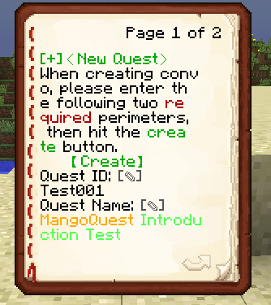
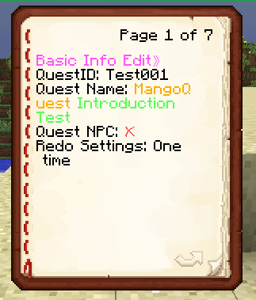

Overview 概覽
This section educates you on how to quickly set up MangoQuest (the functions of the old version) and gives an overview of functions before exploring all the functions of the plugins
本節將教您如何快速設置 芒果任務 (舊版的主要功能)，並快速摸索功能而上手
1 Getting Started 開始使用
For Old Users: 致舊用家
New version mangoquestreloaded is totally backward compatible with the old project mangoquest so no roundabouts are needed.
新版本的 mangoquestreloaded 完全向後兼容舊項目 mangoquest，因此不需要迂迴的方法來執行。
1.1 Instalation 安裝
For Old Users: 致舊用家
Delete the old MangoQuest.jar in the plugins folder, then drag the new MangoQuestReloaded-(version).jar into the pluigns folder, then start the server and the plugin. Then everything is all set :)
刪除plugins文件夾中舊的MangoQuest.jar，然後將新的MangoQuestReloaded-(version).jar拖到pluigns文件夾中，然後啟動服務器和插件。 然後一切就都準備好了:)
New users can just drag the jar into the plugins folder then start the server, then the MangoQuestReloaded folder along with the necessary files will be generated for you. 新用戶只需將 jar 拖到 plugins 文件夾中，然後啟動服務器，就會為您生成 MangoQuestReloaded 文件夾以及必要的文件。
1.2 Preparation Before Using 使用前準備
After starting the server, you will have several files at your disposal. Before you start using the plugin, there will be a few configurations you need to make.
啟動服務器後，您將擁有幾個文件供您使用。 在開始使用插件之前，您需要進行一些配置。

After running the server, your folder should now briefly resembles that of my folder with a few folders and a few files.
The choice,conversation,quest folders along with the npc.yml will be your main working area since most of your quests available to players will be siutated in these 3 folders and the npc configurations will be in npc.yml. The rest are the settings (except for playerdata.yml which stores perplayerlanguage data, which is irrelevant for now.).
運行服務器後，您的文件夾現在應該與我的文件夾類似，其中包含一些文件夾和一些文件。
選擇、對話、任務將是您的主要工作區域，因為您可供玩家使用的大部分任務將位於這 3 個文件夾中。 其餘的都是插件設置的文件（除了 playerdata.yml 存儲 perplayerlanguage 數據，現在無關緊要。）。
For now, we will only consider two files: config.yml and translations.yml
現在，我們只考慮兩個文件：config.yml 和 translations.yml
We first want to set the main display language of the plugin, since this is the area the players look at the most. It matters for all the languages of in-game and console displays.Currently, there are three languages supported, namely zh_TW(taiwanese) ,zh_CN(chinese) and en_US(english). The default is set to be taiwanese.
我們首先要設置插件的主要顯示語言，因為這是玩家最關注的區域。 這對遊戲內和控制台顯示的所有語言都很重要。目前支持三種語言，即zh_TW（台灣）、zh_CN（中文）和en_US（英文）。 默認設置為台灣語。
Then we will take a look at the second language-related option, which is whether to use modified language files. In simple, it is whether the plugin allows you to modify the language properties. I know this is a stupid option, but you want to set it to true since i am pretty sure everyone wants to change how their plugin looks instead of sticking to the default.
那我們再來看看第二個語言相關的選項，即是否使用修改過的語言文件。 簡單來說，就是插件是否允許你修改語言properties檔案。 我知道這是一個愚蠢的選項，但是您想將其設置為 true，因為我很確定每個人都想更改其插件的外觀而不是堅持默認設置。
The next thing we want to look at is the saveType and the database credentials. These two options determine where the player data will be saved at. Currently, there are three save formats that are supported: sql,yml and mongodb. 預設爲yml,如果你想跨伺服器同步資料的話，請考慮使用sql或mongodb.
Another thing we want to look at in this section is the plugin prefix settings. It is quite self-explanatory that this will be the prefix (the text that is placed before every message sent by the plugin). You can change it to however you want, just make sure not to abuse it too much and claim that its your plugin, it is stupid.
在本節中我們要查看的最後一件事是插件前綴設置。 不言自明的是，這將是前綴（放置在插件發送的每條消息之前的文本）。 您可以將其更改為您想要的任何方式，只要確保不要濫用它並聲稱它是您的插件，這是白癡的,哈哈。

The last thing we will check is the properties file. It contains all the messages that plugin will send to both players and admins. If you have changed the plugin language in the config.yml, please reload the plugin or the whole server such that the properties file of other languages (CN/US) will appear. You can change it to make the plugin looks the way you want.
我們要檢查的最後一件事是屬性文件。 它包含插件將發送給玩家和管理員的所有消息。 如果您在 config.yml 中更改了插件語言，請重新加載插件或整個服務器，以便出現其他語言（CN/US）的屬性文件。你可以對其進行修改以改變插件顯示方式。
At this rate all the boring setups are completed. You can go ahead and /mqa reload or reload the plugin however way you want.
到了這裏所有設定已經完成。你可以去打/mqa reload(重新載入指令) 或自行重新載入插件，以套用更新。
Next, we will look at some in-game work.
接下來，我們會看看游戲中的設置。
2 in-game settings 游戲中設置
As aforementioned, in game mostly you will be dealing with the book GUI. There are three main commands concerned in this settings, they are /mq q, /mq e and /mqa commands. The frst is the command that the player will be using to open the book journal and manage their quest progress. The latter two will be the one you are expected to use the most, which concerns the use of the admin interface. There are many admin commands at the moment, but we will just go through some of the most important commands for the most important functions.
如前所述，在遊戲中，大多數情況下您將會在書本 GUI度過。 這個插件主要涉及兩個命令，一個是/mq q，一個是/mqa。 這些都是用來打開不同的書本界面。前者是玩家將用來打開書籍日記並管理他們的任務進度的命令。 後者將是您最常使用的功能,也是你的管理員界面。 目前有許多管理命令，但我們將只介紹一些最重要的命令以實現最重要的功能。
2.1 使用指令的和其他權限 Permissions setup for using commands and other features
Before doing anything in-game, permissions are required in case you are not op. The permissions are listed as below:
在遊戲中做任何事情之前，如果您不是GM，則需要權限。 權限列表如下：
MangoQuest.takeQuest.(任務QuestID) --- if the quest is set to require permissions, then players need permissions to take this quest. 如果任務設置為需要接受任務的許可，則需要此權限才能接受此任務
MangoQuest.AdminCommand --- The permission to use admin command 使用管理員命令的權限
MangoQuest.ConversationEditor --- The permission to use conversation editor 使用對話編輯器的權限
mangoquestreloaded.bungeecord --- The permission to check if player is capable of sending bungeecord command in quest trigger 玩家是否有權在任務觸發使用bungeecord 指令 (covered later 會在後面的内容涵蓋)
2.2 Book GUI in action 書本界面演示 (/mq q)
By doing /mq q, you can see a list of quests related commands. The most important tool is /mq q list, which opens the quest journal. The others are commands that are functions that are already included in the book interface.
通過執行 /mq q，您可以看到與任務相關的命令列表。 最重要的工具是 /mq q list，它可以打開任務日誌。 其他的命令是已經包含在書籍界面中的功能。

This is the main interface you use to take/quit quest/check progress. The interface is just a very simple click GUI. Most text in the book GUIs are clickable to do stuffs. Using this for an example, the three quest states (acceptable,in progress, finished) are all buttons to show the quests under the button categories.
這是您用來接受/退出任務/檢查進度的主界面。 該界面只是一個非常簡單的點擊GUI。 書中 GUI 中的大多數文本都是可點擊的。 以此為例，三個任務狀態（可接受、進行中、已完成）都是按鈕，用於顯示按鈕類別下的任務。
If you do not understand the uses of some buttons, do not panick. Upon hovering buttons, there will be hints to tell you what that button does in most cases.
如果您不了解某些按鈕的用途，請不要驚慌。 懸停按鈕時，將有提示告訴您該按鈕在大多數情況下的作用。
Just try clicking every text button ever in the book GUI and you may have unexpected surprises!
只需嘗試單擊本書 GUI 中的所有字眼按鈕，您可能會遇到意想不到的驚喜！
2.3 Lets make some quests! 來做任務吧! (/mq e)
Most of the quests are made through the use of Book GUI as said, which is the online quest editor. The command to bring it up is /mq e.
如前所述，大多數任務都是通過使用 Book GUI 完成的，這是在線任務編輯器。 啟動它的命令是 /mq e。

The options are quite self-explanatory. There are 3 buttons: New quest, edit quest and remove quests.
這些選項是挺明顯的。 有 3 個按鈕：新任務、編輯任務和刪除任務。
We will first go through how to make a quest thoroughly. 我們會先看看怎樣做一個任務
2.3.1 Naming the quest 命名任務

First we will set the quest names. The upper part of the settings shows Quest ID settings. QuestID is the identifier used by the plugin to identify quests just like a file name. The requirement for this field is that it has to be unqiue, or else chaos will occur.
首先是設定任務的名稱。 上面的QuestID(任務内部名稱)是供系統辨認任務的名稱，就像檔案名字一樣，要求是要獨一無二，不然會發生混亂。
The second field is the Quest Name, which is the settings for the display name of the quest. This will be the text shown to players in the book GUI.There are virtually no requirements for this field, and you can set it to however you want. You can even use color codes such as hex color (1.16+), to decorate it.
第二個選項是任務的顯示名稱。 這是那個會在書本界面中顯示的任務名稱， 你可以把他設置成任何你喜歡的模樣。你更可以使用顔色代碼 例如16進制顔色來裝飾他。
These options can be set through entering the desired text in the chatbox.
可以通過在聊天框中輸入所需的文字來設置這些選項。
After setting all the fields, we can go ahead and hit the 【create】 button.
設置了所有東西之後，我們可以點【創造】按鈕。
2.3.2 configure the major quest settings 設定主要任務信息
After adding the names we can now come to the main settings of the quests. Here you will set all the information regarding the quests, including how and where the quest will be displayed, how the quests are taken, what are the stages/objectives, what are the events that might happen, what are the rewards etc. 添加名稱後，我們現在可以進入任務的主要設置。 在這裡，您將設置有關任務的所有信息，包括任務的顯示方式和位置、任務的執行方式、階段/目標是什麼、可能發生的事件是什麼、獎勵是什麼等。

You can check out some basic info on the first page. The quest ID is as the previously set ID,but the quest name can be changed to your liking if you regret your choice of name by clicking on the previously set name.
The Quest NPC Option is the NPC your player is limited to take quest from. With the NPC set, you are allowed to take quest through NPC gui and only allowed to take quest near the NPC.
您可以在第一頁查看一些基本信息。 任務ID與之前設置的ID一樣，但是如果您對選擇的名稱感到遺憾，可以通過單擊之前設置的名稱來更改任務名稱。
2.3.2.1 Redo Settings 重複執行設定
The Redo Settings is the cooldown for taking quests again after finishing quests. The default is once_only, meaning that you can never take the quest again. Upon clicking the Redo Settings button, you will be directed to the settings:
Quest NPC Option 是您的玩家被限制接受任務的 NPC。 設置NPC後，您可以通過NPC gui接任務，並且只能在NPC附近接任務。 重做設置是完成任務後再次接任務的冷卻時間。 默認值為 once_only，這意味著您永遠不能再次接受該任務。 單擊重做設置按鈕後，您將被引導至設置：

This is the interface to set the quest cooldown mode.
The daily,weekly are self-explanatory, meaning that one can take the quest once per day/week. Whereas the COOLDOWN mode is a mode which allows you to define your own cooldown time. To select the modes, close the book GUI and enter the desired mode and hit enter.
這是設置任務冷卻模式的界面。
每日，每周的功能很明顯,意味著一個人可以每天/每週接受一次任務。 而冷卻模式是一種允許您定義自己的冷卻時間的模式。 要選擇模式，請關閉圖書 GUI 並輸入所需的模式並按 Enter。
In particular, when you set the cooldown mode, an additional option pops up which allows you to define your own cooldown. Click it and enter custom cooldown in the chatbox and enter. Note that the unit to input is seconds. You only have to enter the seconds (a bit of math is required to convert dates to seconds, will be patched in later versions because this is stupid)
特別是，當您設置冷卻模式時，會彈出一個附加選項，允許您定義自己的冷卻時間。 單擊它並在聊天框中輸入自定義冷卻時間並輸入。請注意，在這裏輸入的時間單位是秒，衹需輸入數字即可
The second page concerns some display settings and also how the quests will go. Likewise, I will pick a few mentionable topics to discuss.第二頁涉及一些顯示設置以及任務將如何進行。 同樣，我將挑選一些可提及的話題進行討論。
2.3.2.2 Quest Quitable 放棄任務
If set to true, then the quest cannot be quitted once started and the player will be forced to complete it.
如果設定成TRUE,則任務不可以中途退出
2.3.2.3 Enable Quest Take Permission 任務接取權限
If enabled, taking this quest will require permission MangoQuest.TakeQuest.(QuestID). For more details about permissions please go to Permissions as defined above
如果啟用，執行此任務將需要 MangoQuest.Take Quest.(Quest ID) 權限。 有關更多權限的詳細信息，請轉到以上定義的權限
2.3.2.4 Quest Allowed World 限制任務執行世界
This option is for limiting player to only do quests in a certain world. To set the world, enter the world name into the chatbox and hit enter. 此選項用於限制玩家僅在某個世界中執行任務。 要設置世界，請在聊天框中輸入世界名稱並按 Enter。
2.3.2.5 Quest Display Settings 任務顯示設定
In the page, you can also find some quest display settings to configure. The four display modes are: Acceptable, in progress, finished quests, and NPC Gui. The first three are the three categorizes as listed in the quest journal /mq q list. By enabling each category (right click the cross/tick button), you allow them to be displayed in each cateogry. Whereas the fourth is the option whether to display the quest in NPC gui (right click Quest NPC).
在頁面中，您還可以找到一些要配置的任務顯示設置。 四種顯示模式分別為：可接受、進行中、已完成和NPC Gui。 前三個是任務日誌/mq q 列表中列出的三個類別。 通過啟用每個類別（右鍵單擊交叉/勾選按鈕），您可以允許它們顯示在每個類別中。 而第四個是是否在NPC gui中顯示任務的選項（右鍵單擊任務NPC）。
2.3.2.6 Time-Limited Quest 限時任務
This option allows you to choose whether to disqualify the quest with a timer. When enabled, the timer ticks the moment you start taking quest, then disqualify when time is up. Toggle by clicking cross/tick button. Upon enabling, you will see an additional option just like the Redo Settings. Repeat the same steps.此選項允許您選擇是否使用計時器取消任務的資格。 啟用後，計時器會在您開始接受任務的那一刻滴答作響，然後在時間到時取消資格。 通過單擊交叉/勾選按鈕進行切換。 啟用後，您將看到一個附加選項，就像重複執行設置一樣。 重複相同的步驟。
2.4 Quest Main Settings 任務主要内容設定
Here you will find the main settings which control the flow of the gameplay of players. The setting on top (Quest Requirement) allows you to set what extra conditions are needed before you can take the quest. The setting Events (Trigger) will be a series of events that will take place throughout the quest, for revealing plots, revealing villains, whatever events you can come up with! The final setting Settings will be the most important part of the quest setting. It controls how many stages there are in the quest, and what objectives in each stage you need to fulfill in order to complete the quest. As usual, I will take the most important parts to be included in the tutorial. 在這裡，您將找到控制玩家遊戲流程的主要設置。 頂部的設置（任務要求）允許您設置需要哪些額外條件才能進行任務。 設置事件（觸發器）將是一系列事件，將在整個任務中發生，用於揭示情節，揭示反派，任何你能想出的事件！ 最終設置設置將是任務設置中最重要的部分。 它控制任務中有多少個階段，以及您需要在每個階段完成哪些目標才能完成任務。 一如以往，我會挑選值得討論的話題作教程。
2.4.1 Quest Trigger 任務事件觸發
Here you will find a list of options for selecting the timings for events to be triggered.
The first three, are as its literal meaning. The Trigger when N-th stage starts condition will trigger when the quest reaches the Nth stage. The Trigger when N-th stage finishes condition does similarly, but trigger when the stage finishes.
在這裡，您將找到一個選項列表，用於選擇要觸發的事件的時機.
前三者，皆如其字面意思。 第 N 階段開始時觸發條件將在任務到達第 N 階段時觸發。 第 N 階段完成時觸發 條件類似，但在階段完成時觸發。
Upon selecting the timing, you will be looking at this page: It shows all the triggers that exist in such timing.
You can add some triggers by clicking the [+] button.
選擇時間後，您將看到此頁面：它顯示了在這一時機中所有存在的事件觸發。
您可以通過單擊 [+] 按鈕添加一些事件觸發。
You can now select the types of triggers. The instructions exist upon clicking the buttons, and the types are quite self-explanatory. Again, I will talk about some most meaningful triggers.
您現在可以選擇觸發器的類型。 單擊按鈕時會出現說明，並且裏面的説明，步驟等很顯淺。 同樣，我將討論一些最有意義的事件觸發。